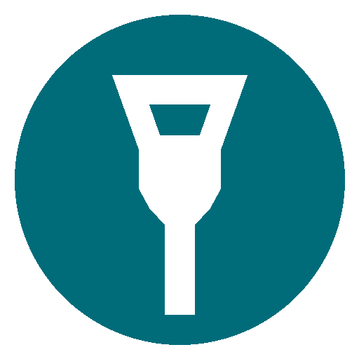
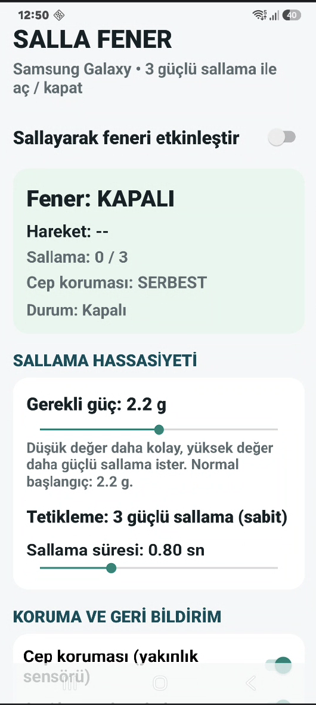
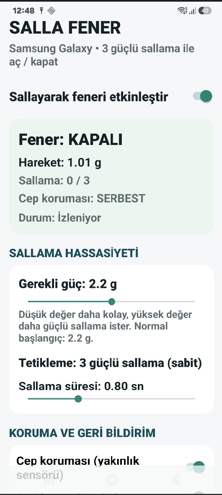
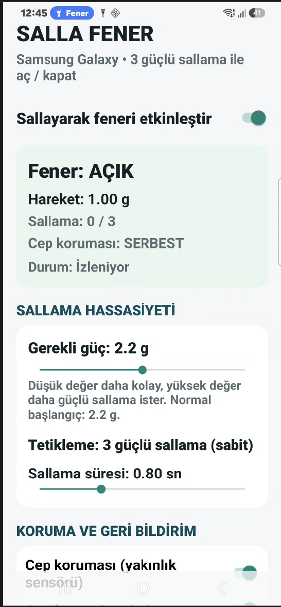
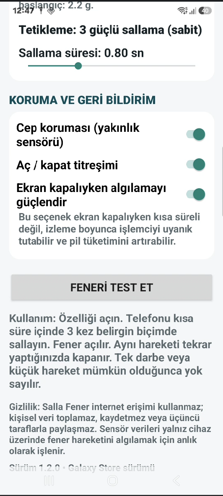

Salla Fener
Telefonu 3 kez güçlü sallayarak feneri açın. Tekrar 3 kez sallayarak kapatın.
Uygulamaları inceleyin ve APK dosyasını doğrudan indirin.

Telefonu 3 kez güçlü sallayarak feneri açın. Tekrar 3 kez sallayarak kapatın.




APK dosyasını indirin ve açın. Android isterse “Bu kaynaktan yüklemeye izin ver” seçeneğini etkinleştirin.